Attention Is All You Need
Authors: Ashish Vaswani, Noam Shazeer, Niki Parmar, Jakob Uszkoreit, Llion Jones, Aidan N. Gomez, Łukasz Kaiser, Illia Polosukhin
For class EE/CSC 7700 ML for CPS
Instructor: Dr. Xugui Zhou
Presentation by Group 1: Lauren Bristol (Presenter), Joshua McCain, Joshua Rovira
Summarized by Group 6: Yunpeng Han, Yuhong Wang, Pranav Pothapragada
Time: Friday, September 13, 2024
Summary
This paper introduces a novel sequence transduction model architecture named the Transformer.
This architecture is based solely on attention mechanisms, eliminating the need for recursion and convolution.
The model addresses the limitations of sequence models that rely on recursive processes, which perform poorly in parallelization and computational efficiency for longer sequences.
The Transformer adopts an encoder-decoder structure, where the encoder consists of identical layers with multi-head self-attention and fully connected feed-forward networks,
while the decoder mirrors this structure but adds a multi-head attention layer on the encoder's output; utilizing scaled dot-product attention and multi-head attention,
the model computes the importance of key-value pairs based on queries and allows joint attention across different subspaces,
with encoder-decoder attention enabling the decoder to focus on all input positions,
self-attention improving contextual understanding by attending to all positions within layers,
and positional encodings ensuring the model captures the order of tokens in a sequence.
Slide Outlines
The Transformer

The Transformer is introduced, which revolutionized the NLP field by replacing the need for recurrence (as in RNNs) and instead using an attention mechanism to capture dependencies between inputs and outputs. The transformers looks to address sequence,
transduction problems. Specifically, the transformer was developed with natural language processing in mind specifically, for example, language translation from an English sentence to a French and a German sentence.
What Problems Are We Addressing？
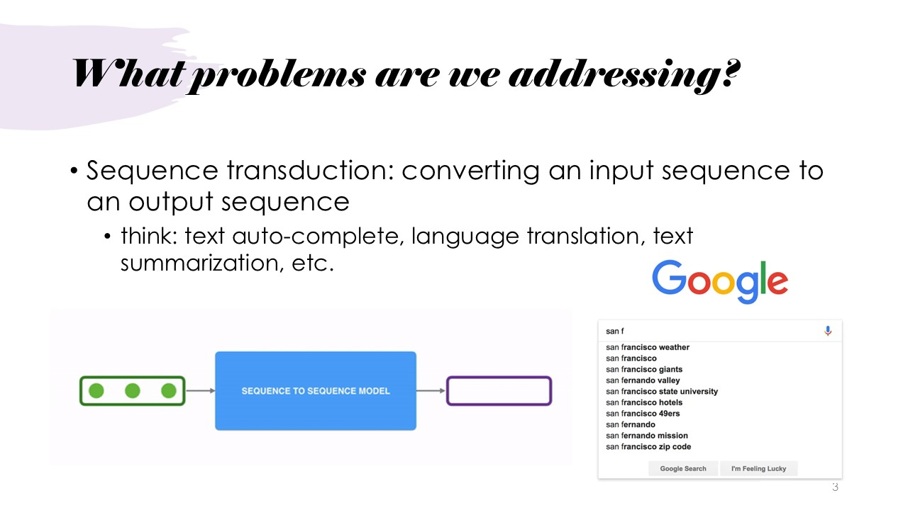
The Transformer was built to address sequence transduction problems, such as language translation, text auto-completion, and text summarization. These problems involve converting an input sequence to an output sequence.
Related Work: RNNs
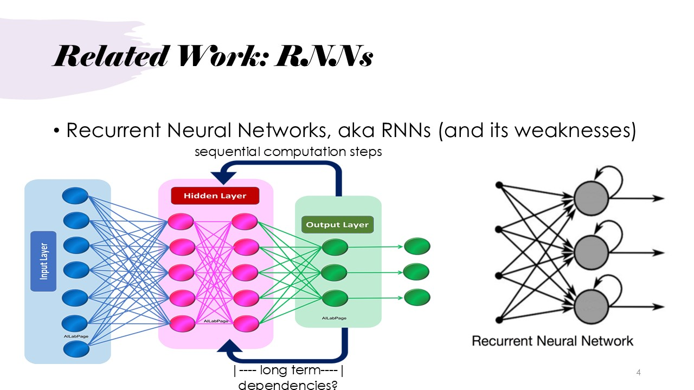
RNNs is not ideal to be applied to sequence modeling, sequence transaction problems, specifically when it comes to natural language processing. RNNs can store memory for sequence processing but suffer from long-term dependency issues, meaning they struggle to remember important information from earlier in the sequence. Also, RNNs perform computations sequentially, which slows down the training process.
Related Work: CNNs

CNNs allow parallel computation, but they face difficulties in capturing long-distance dependencies in the sequence in the text. A convolution neural network processes input through a sliding window, and these sliding windows can sometimes be smaller, which also struggles to capture the relationships in the full sentence and instead would focus on smaller parts of the sentence.
Related Work: Attention Mechanisms
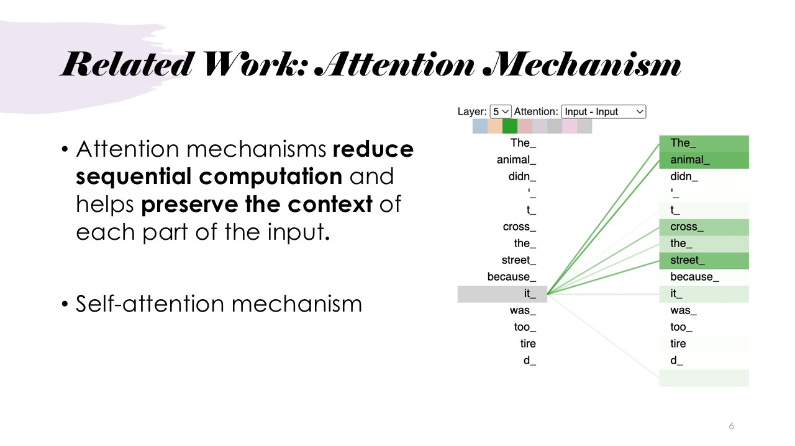
Attention mechanisms reduce the need for sequential computation and help preserve context in the input. Self-attention relates different parts of a sequence to compute its representation, allowing for parallel computation and capturing long-distance dependencies.
Related Work: Encoder-Decoder Architecture
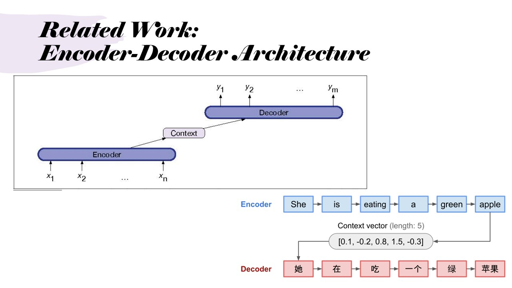
The encoder-decoder architecture creates meaningful representations of input sequences. The encoder processes the input, creating a context vector, which the decoder uses to generate an output sequence. This architecture is used in tasks like language translation. For example,"She is eating a green apple", this has been translated into a context vector, which is a numerical representation and fed into the decoder. And it can be translated based the trained dictionary for the target vocabulary.
Related Work: RNN Encoder/Decoder
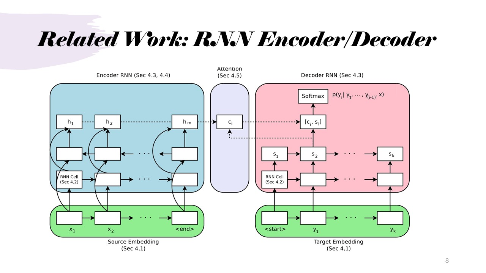
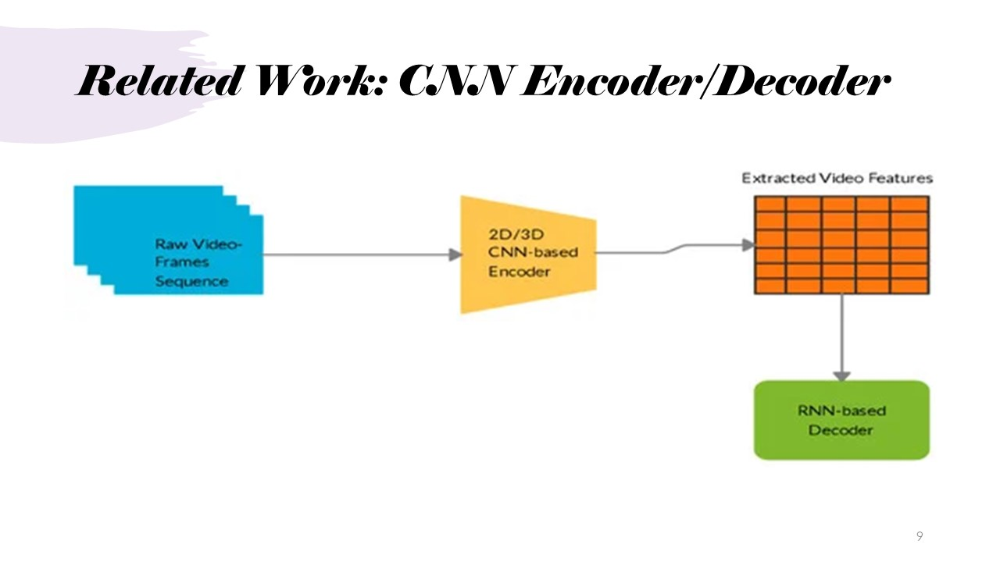
RNNs and CNNs can be used within an encoder-decoder architecture. CNNs are really good for understanding images, which used a lot in computer vision. In RNN-based decoder, neural network is able to generate a sequence of text that describes that image, but the sliding windows are still pretty small. However, both models face issues, such as sequential dependencies (RNNs) and difficulty in capturing complex relationships (CNNs), limiting their efficiency in tasks like language translation or image captioning. For example,it may be difficult for the CNN to fully understand and represent the connections between different elements of different parts of a pretty chaotic image.
Motivations
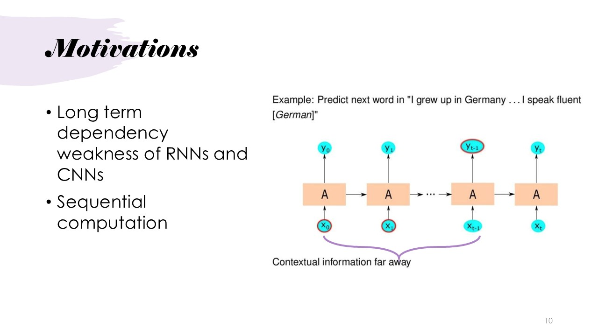
The weaknesses of RNNs and CNNs in handling long-term dependencies and sequential computations motivated the development of the Transformer. The example sentence "I grew up in Germany...I speak fluent" illustrates how RNNs might fail to preserve the necessary context for understanding later parts of the sentence.
Why Is Context Important?
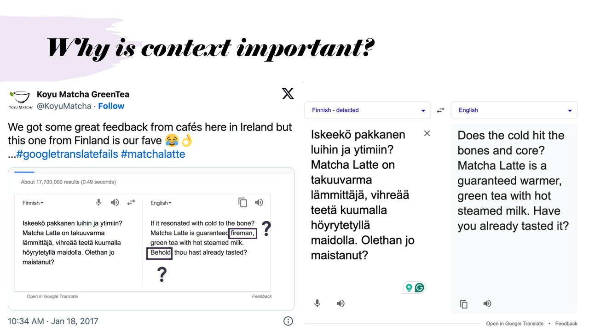
Understanding context is crucial in sequence transduction. The example of google translation mishap, where the term "matcha latte" is translated to "fireman", highlights how incorrect context can lead to flawed outputs.
The Transformer Definition
 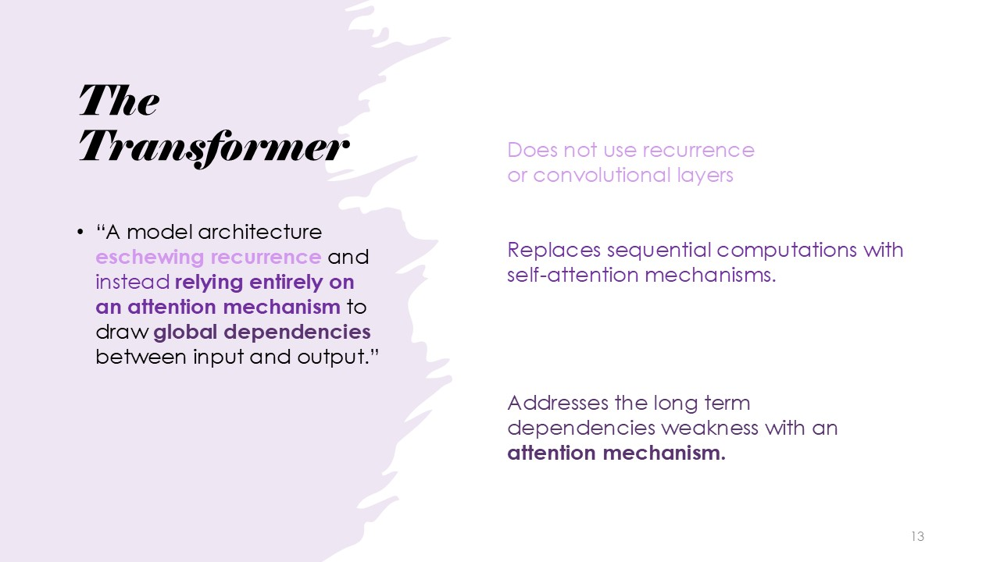
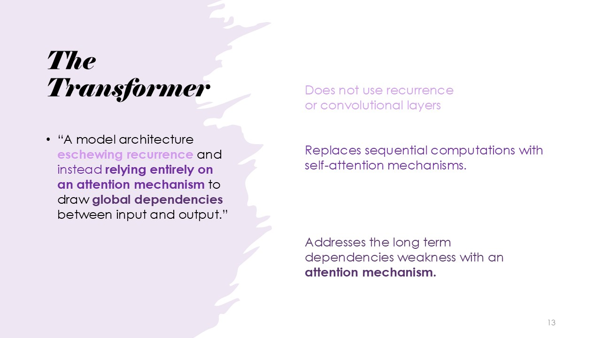
The transformer model architecture that does not need or require any recurrence.Additionally, it relies entirely on an attention mechanism.
It uses attention mechanisms to be able to understand the dependencies and the relationships between the different words in the sentence.
The long-term dependency relationships has also helped to be resolved by the attention mechanisms.
The Transformer Architecture
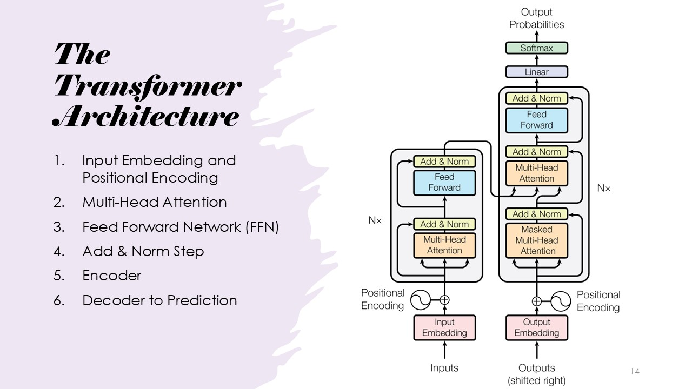
The architecture consists of input embedding, positional encoding, multi-head attention, feed-forward networks, add and norm steps, encoder, and decoder.
The word embedding is a learned embedding that's a vector that's a learned embedding that represents the word.
The positional encoding has to do with sine and cosines, and it represents where the word is in the sentence relative to all the other tokens.
The word embedding,which includes what the word is as well as the positional context.
Example

The example sentence "The animal didn’t cross the street because it was too tired." were used throughout the presentation to show how the Transformer model processes input and generates output,
including show the inputs and outputs of the encoding and positional encoding and word embedding step.
Architecture: Input Embedding and Positional Encoding
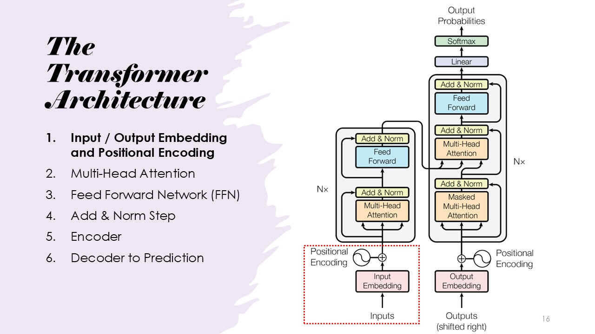
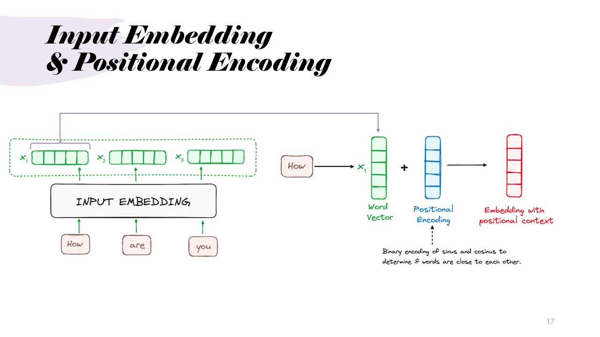
Input sequences are converted into word embeddings (numerical representations of words) and positional encodings,
which capture the position of each word in the sentence. This allows the Transformer to understand the order and relationships of words.
Example
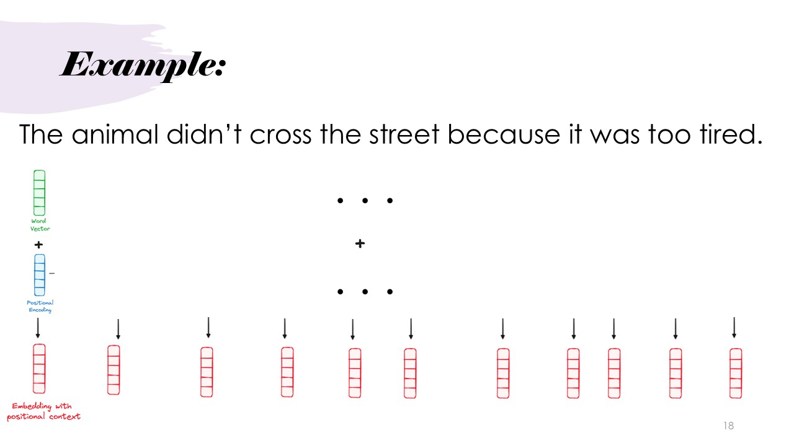
This slide presents the operation above in the example, the word encoding vector and positional encoding vector are combined to get a single embedding with positional context.
Architecture: Encoder
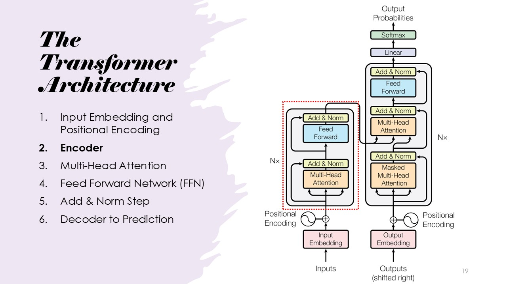
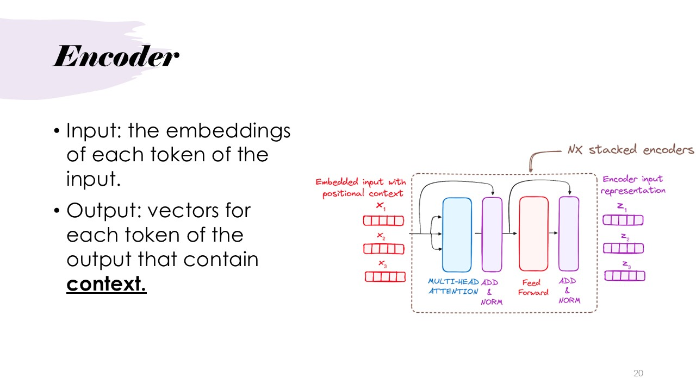
The next step is the utilization of the encoder, which processes the embeddings and positional encodings and applies multi-head attention and feed-forward networks.
This step helps generate context-rich representations of each token in the input. The input embedded input with positional encoding is sent through a set of N stacked encoders, each containing the above mentioned networks. The networks are the same as the ones used in the next few steps and are directly explained there.
Example
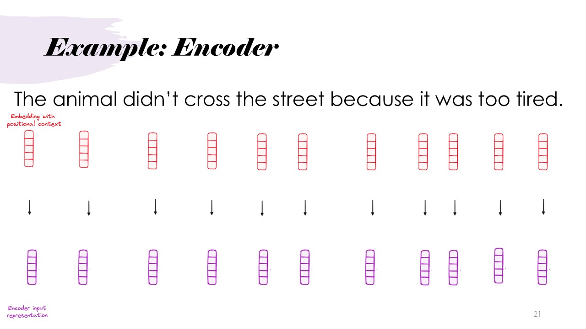
This example shows the encoder stack taking in the previously generated input, and generating the corresponding encodings, which we now assume to have all the context in the input text.
Intuition: Multi-Head Attention
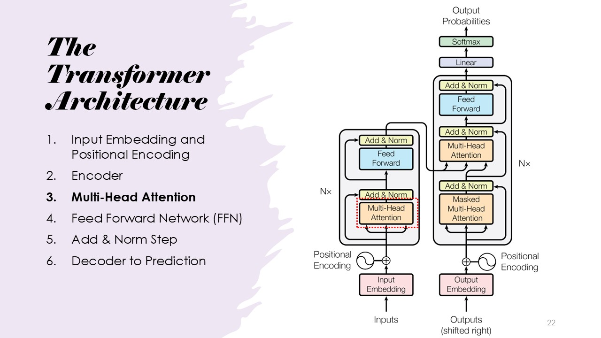
 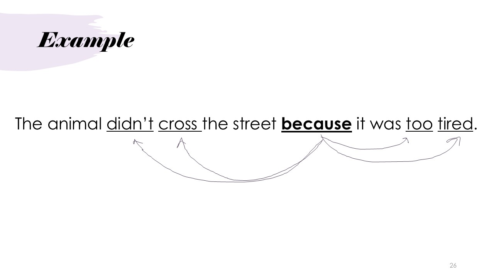
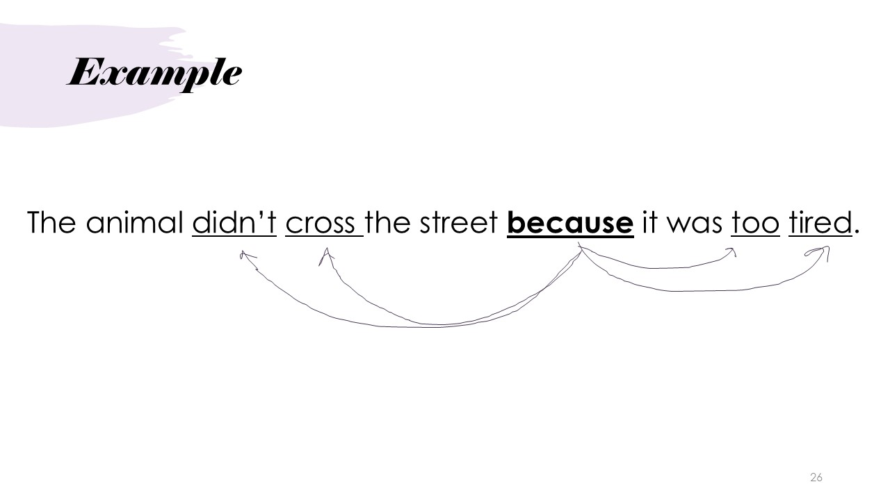
These slides highlight the Multi-Head Attention architecture. The underlying intuition is explained through two example slides [Note: Some slides are hidden for brevity]. As the name implies, attention models identify relevant words earlier or later in the text, depending on their relationship to the current word. Each head in the Multi-Head Attention mechanism captures different types of relationships. For instance, one head might focus on subject-object relations, while another could interpret cause and effect, as can be seen on the examples. With multiple heads, the model gains a more nuanced and comprehensive understanding of the input.
Multi-Head Attention

Here, Multi-Head Attention is formally defined and explained as a set of multiple attention functions being processed parallely, to identify the tokens in a given input, and their relation to a given token, for different heads. A demonstation link has been posted by the presenter, which can be accessed at: Demonstration
Attention Function: Scaled Dot-Product


Here, we formally expand on the previously mentioned attention function. The Scaled Dot-Product Attention mechanism calculates attention scores by determining relationships between the query, key, and value vectors for each token in the input sequence. As illustrated in the example slide, the dot-product between the query and key matrices is computed, followed by scaling to generate a final attention matrix. This matrix contains the weights, representing the significance of each query token in relation to the tokens in the input.
The process begins with transposing the key matrix and performing a dot-product with the query matrix to produce raw attention scores, which capture the correlation between each query token and the corresponding keys. These scores are then scaled to mitigate the issues of vanishing or exploding gradients, which can occur due to large values in the matrices.
Architecture: Feed Forward Network (FFN)
 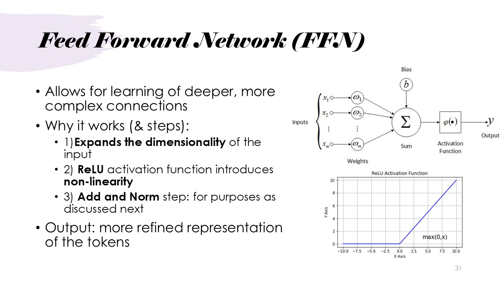
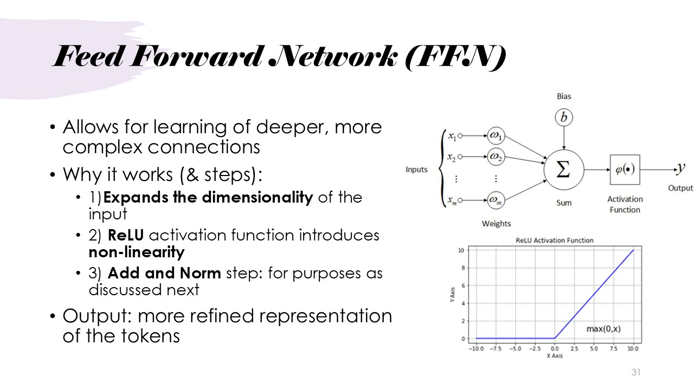
The next step in the architecture is the utilization of Feed-forward networks. These layers expand the dimensionality of the input and introduce non-linearity through the ReLU activation function, this allowes for a larger set of deeper layers. Passing the input through this allows for a more refined or "compressed" representation of the context represented by the tokens.
Architecture: Add & Norm Step
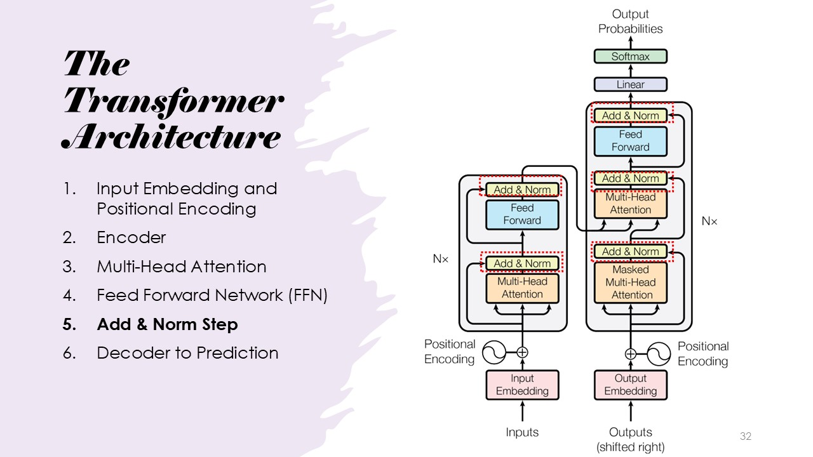

Dividing the step into an Add step and a Norm step, the Add step utilizes residual connections, similar to the ones presented in the previous presentation on ResNets. This step potentially helps preserve the input across multiple layers. The Norm step then normalizes the layer input, which helps stabilize the model, reducing issues like exploding or vanishing gradients during training.
Architecture: Decoder

Finally, we move up to the workings of the Decoder in transformer models. It highlights the Masked Multi-Head Self-Attention mechanism, which ensures that the decoder only attends to tokens that have already been generated, preserving the sequence order during output generation. The Encoder-Decoder Attention module combines the contextual information gathered from the encoder with the target sentence context, enabling the model to translate or generate text more effectively. The Feed-Forward Network then processes these relationships further, helping the decoder to gain a better understanding of the connections between words. Finally, the output is a probability distribution, representing the probabilities of the next potential word in the sequence.
Example
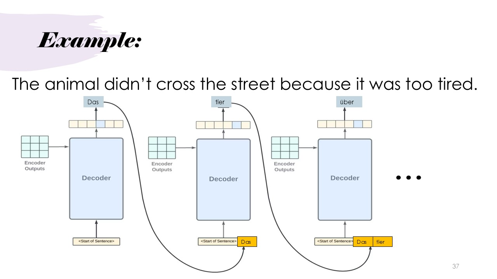
Considering the original translation task again, it shows how the transformer decoder generates predictions word by word in a task. By feeding each previously generated word back into the model, the decoder can better maintain context and make more accurate predictions for the next word. This recurrent process allows the model to understand both the structure and meaning of the sentence as it builds the translation incrementally.
Why does transformer architecture work?
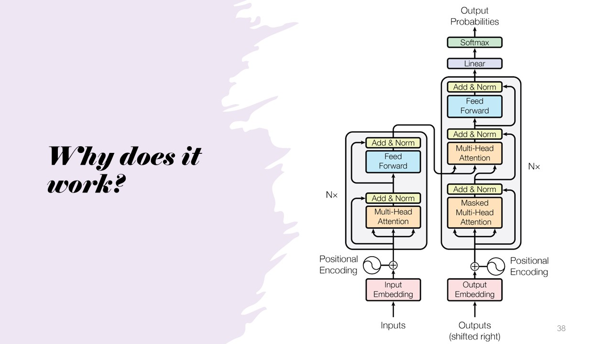
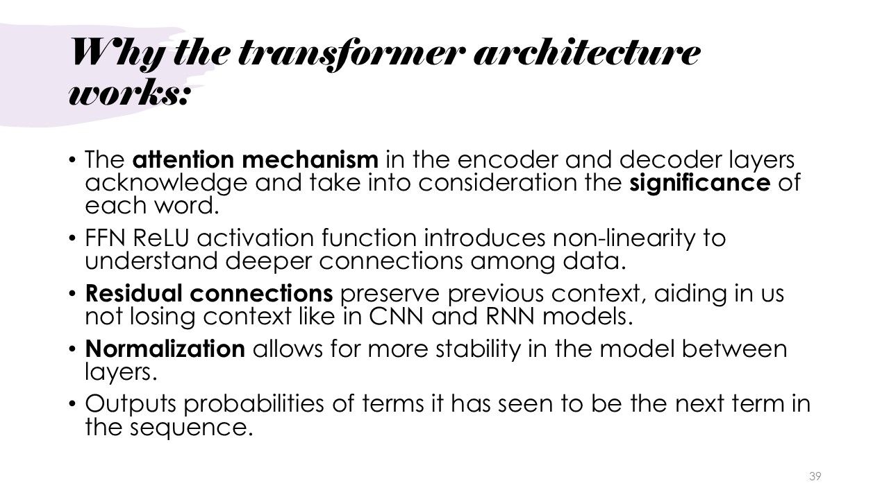
The Transformer works because its attention mechanisms maintain context throughout the sequence,
the FFN introduces non-linearity, and residual connections ensure information isn't lost during computation.
Method and Results
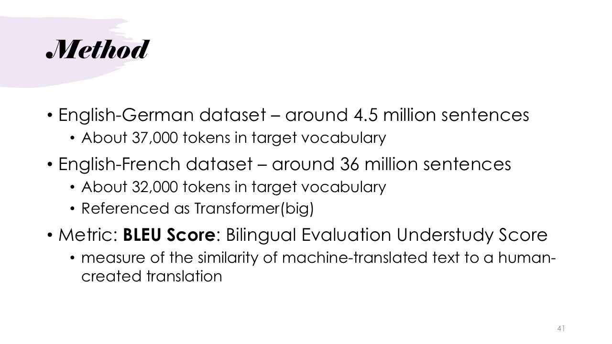

The method used to evaluate the Transformer model focuses on two datasets: English-German with 4.5 million sentences and 37,000 tokens in the target vocabulary, and English-French with 36 million sentences and 32,000 tokens. The BLEU Score (Bilingual Evaluation Understudy) is the key metric for evaluation, which measures the similarity between machine-generated translations and human reference translations. BLEU works by comparing phrases of varying lengths in the candidate translation to those in the reference, giving a score based on how many phrases are matched and adjusting for brevity to prevent artificially high scores from short outputs. A higher BLEU score indicates better translation accuracy, with the Transformer (big) model achieving 28.4 for English-German and 41.8 for English-French, outperforming other state-of-the-art models. Additionally, the Transformer model's training costs, measured in floating-point operations per second (FLOPs), are significantly lower, meaning it provides superior translation quality with greater computational efficiency, making it highly scalable for training on large datasets.
Use Cases and Applications
 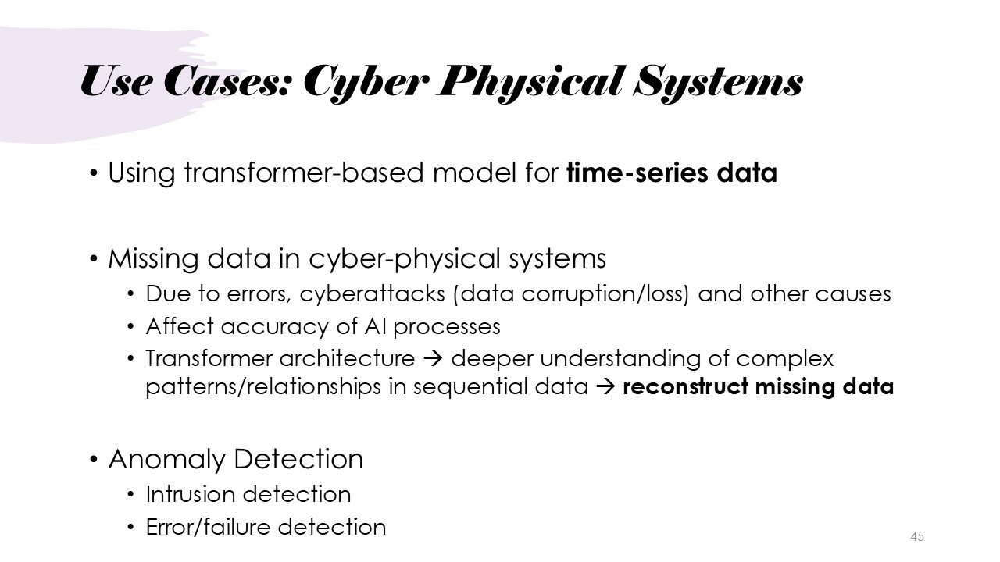
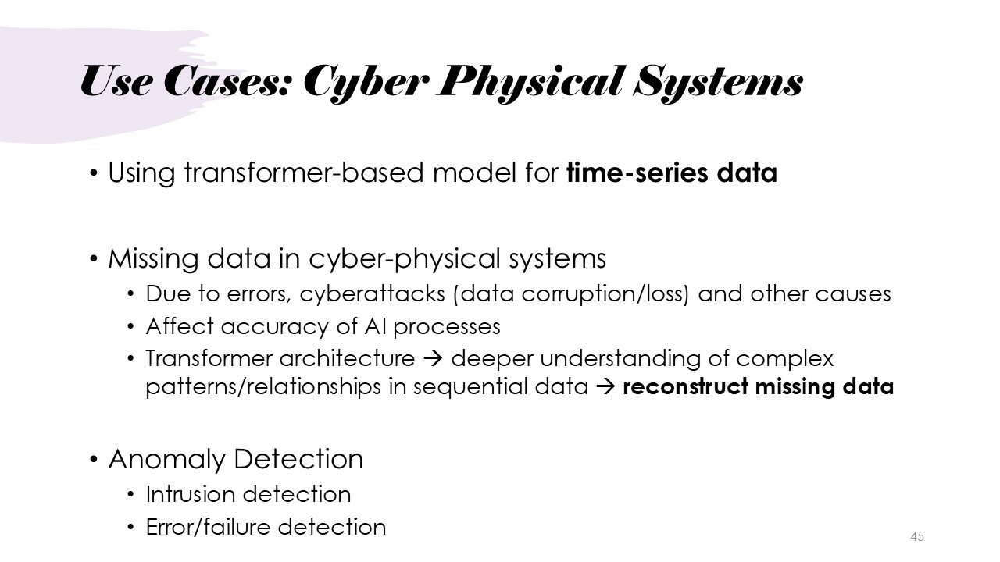
Transformers have become a foundational technology in a wide range of fields, as highlighted in the applications slide. They are crucial in tasks like natural language processing (NLP), speech recognition, text summarization, and language translation, where understanding the sequence and context of data is essential. Transformers are also applied in signal processing and the modeling of dynamical systems, where predictions are based on recognizing patterns from preceding data. A powerful example of the transformer architecture is GPT (Generative Pre-trained Transformer), which has revolutionized NLP tasks by generating human-like text, enabling applications such as content creation, automated conversation systems, and code generation. GPT models can process large amounts of data, learning complex relationships and structures within text, which makes them particularly valuable for both creative tasks and automation across industries.
When applying transformers to cyber-physical systems, such as those that operate with time-series data, their ability to understand sequential patterns is invaluable. Transformers help address issues like missing data, which may occur due to errors, cyberattacks, or system malfunctions. By analyzing the relationships within the available data, transformers can effectively reconstruct missing information, ensuring system resilience and maintaining accuracy. Moreover, they play a significant role in anomaly detection, identifying deviations in system behavior, such as potential intrusions or failures, thus improving both the security and reliability of these critical infrastructures.
Summary: Main Contributions and Limitations
 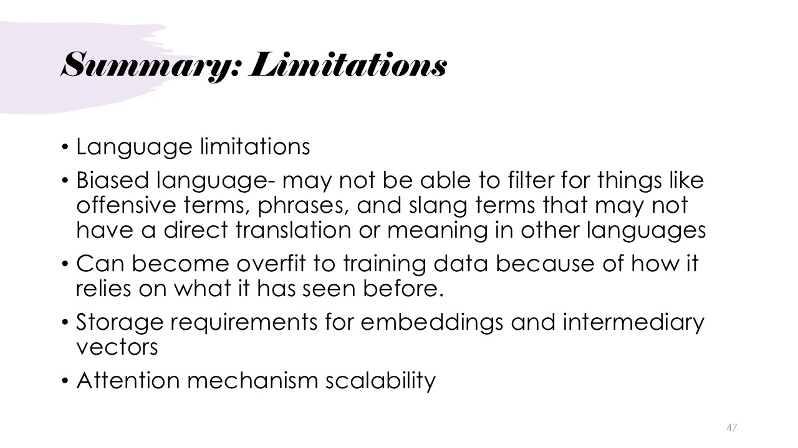
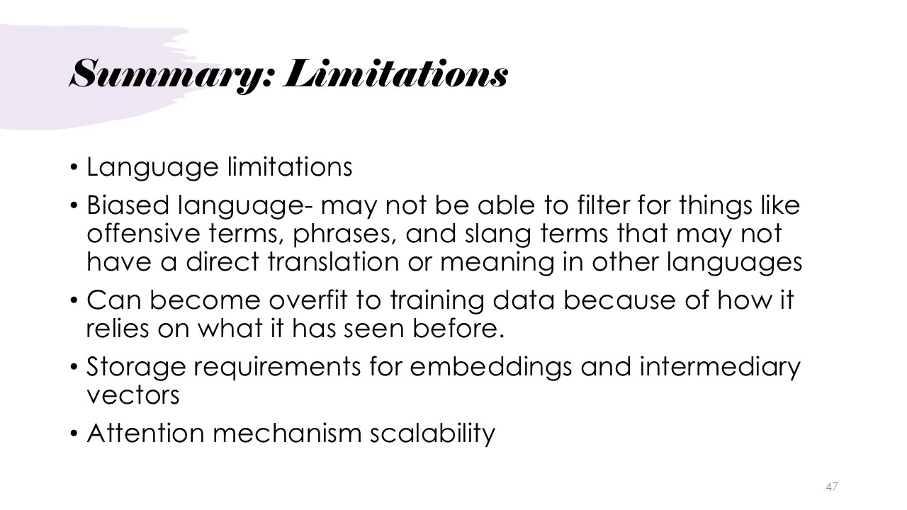
The Transformer offers faster learning and maintains context better than previous models, but it has limitations,
such as handling biased language and requiring large storage for embeddings.
Contributions

This presentation is by LAUREN BRISTOL, with her group member: Josh McCain and Josh Rovira
Discussion Questions
Q1: The feed-forward network has benefits in the way that it avoids sequential computation while still being able to learn more complex relationships. Are there better/other options than the feed-forward network, or is there something that could replace it for improved or similar functions?
Utilizing sparse activation to reduce cost:One of the groups brought up a paper demonstrating that using sparse activation can reduce computational costs by nearly 90%. For large language models (LLMs), they focused on specific cases and tasks where the activation patterns are learned and stored. These learned activation locations are then used to replace the traditional feed-forward network. By applying these pre-learned activation patterns in relevant tasks, the network operates significantly faster, especially when processing those specialized cases./p>
-
Implementing the network on FPGAs:The group discussed a paper that doesn't propose an entirely new approach but focuses on using the same feed-forward network in a different hardware environment. Rather than implementing it on GPUs, as is the standard practice, the paper explores the implementation on FPGAs (Field-Programmable Gate Arrays). The performance improvements stem from the fact that FPGAs can be customized specifically for neural network architectures. This hardware specialization potentially allows operations such as matrix multiplications to be executed much more efficiently compared to conventional GPU setups, leading to significantly faster performance and better resource optimization.
Q2: How can reinforcement learning and transformer-based architectures be applied for decision-making in cyber-physical systems?